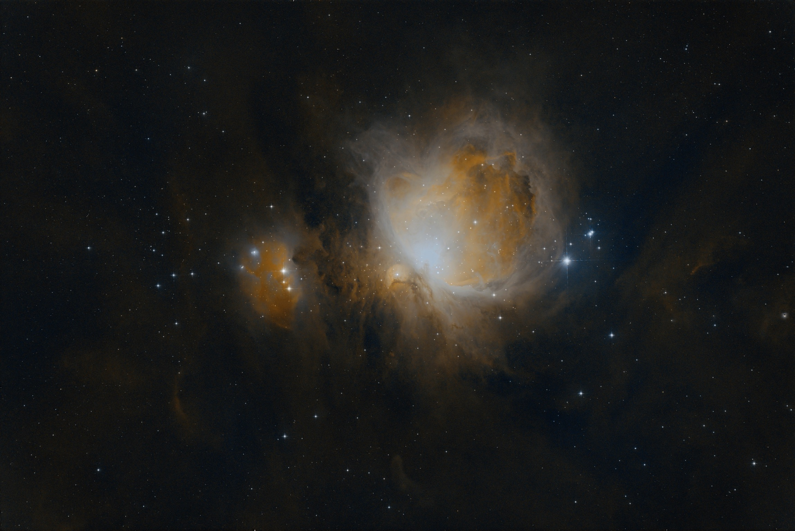
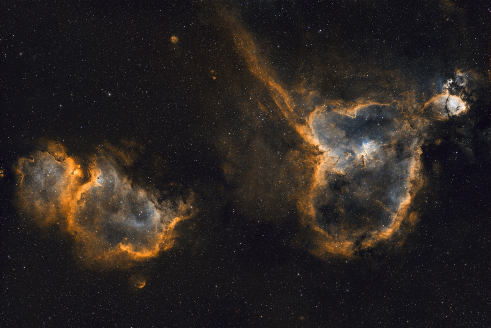
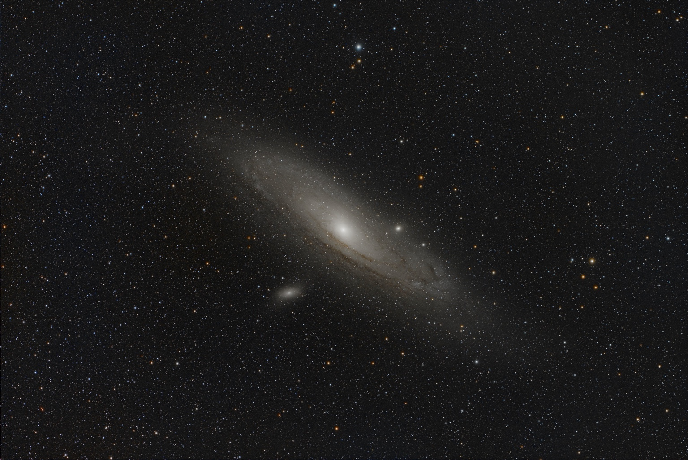

01 / M 42A star begins
A star begins
in the dark.
Gravity draws gas together. As a cloud contracts, its centre heats up. Deep within, a new star can begin to shine.
Before the light, the gathering.
Journal · Entry 08 · A cosmic journey
The invisible architect of the cosmos
I / The invisible
Across the darkness, invisible forces shape everything we see.
Light travels. Matter gathers. Space bends.
And from the silence,
worlds emerge.
Gravity leaves its signature in the path of light. A massive object can bend and magnify the view of something far behind it.
NASA · How gravity warps light ↗II / The architecture of existence
The photograph holds a moment. The forces within it have been working for ages.

Gravity draws gas together. As a cloud contracts, its centre heats up. Deep within, a new star can begin to shine.
Before the light, the gathering.

New stars illuminate their surroundings. Radiation and stellar winds reshape the clouds that gave them life.
Creation changes the place it begins.

Stars, gas and dark matter contribute to a galaxy’s gravitational field. What looks still in a photograph is a system in motion.
A luminous trace of an unseen structure.
III / The prodigious force
We admire the beauty of the universe.
Yet beauty is only what reaches our eyes.
Behind every star, every galaxy, every luminous cloud—
there are forces we cannot see.
Behind the imagery
Gravity is the thread of this essay, not the only force in nature. Electromagnetism and nuclear processes also shape stars and the light we receive. The animated scenes are artistic interpretations, not physical simulations; the photographs are my own processed observations.
NASA · The lives of stars ↗